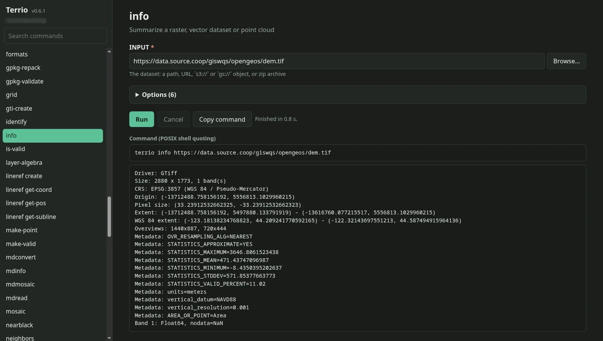

GIS DAY 2026 · 18.11.2026GIS DAY 2026 · 18 Nov 2026
GIS DAY: FME, GDAL, QGIS და Terrio-ს შედარებაGIS DAY: FME vs GDAL vs QGIS vs Terrio
გეოსივრცული მონაცემების დამუშავების, ავტომატიზაციის, არქიტექტურის, წარმადობისა და სერვერული შესაძლებლობების ტექნიკური შედარებაA Technical Comparison of Geospatial Data Processing, Automation, Architecture, Performance and Server Capabilities
ფაქტები გადამოწმებულია 2026-11-16-ზე · კლავიში L — ენა, S — ლექტორის ხედიFacts verified as of 2026-11-16 · key L switches language, S opens presenter view
 დაასკანერე და გახსენი საიტიScan to open the site
დაასკანერე და გახსენი საიტიScan to open the sitegisday.qgis.ge
შესავალიIntroduction
გეოსივრცული მონაცემების დამუშავების ეკოსისტემაThe geospatial data processing ecosystem

- ფორმატების სიმრავლე და სხვადასხვა კოორდინატთა სისტემა
- დიდი რასტრული, ვექტორული და LiDAR მონაცემები
- განმეორებადი, ავტომატიზებული პროცესები
- შედეგების გამოქვეყნება ვებ-სერვისებად
- Many formats and coordinate reference systems
- Large raster, vector and LiDAR datasets
- Repeatable, automated workflows
- Publishing results as web services
FME
ETL პლატფორმა · სერვერი (FME Flow)ETL platform · server (FME Flow)
GDAL
დამუშავების ბიბლიოთეკა · ბრძანების სტრიქონის ხელსაწყოებიProcessing library · command-line toolkit
QGIS
დესკტოპ GIS აპლიკაცია · QGIS Server (OGC)Desktop GIS application · QGIS Server (OGC)
Terrio
ბიბლიოთეკა და CLI · ბრაუზერზე დაფუძნებული WebAssembly აპლიკაციაLibrary and CLI · browser-based WebAssembly application
FMEFME
FME (Safe Software): სივრცული ETL და ავტომატიზაციაFME (Safe Software): spatial ETL and enterprise automation
2026.2 · 2026 წლის ივნისი2026.2 · June 2026 კომერციულიCommercial კვარტალური გამოშვებებიQuarterly releases
- FME Form / Workbenchავტორინგის გარემო; Readers → Transformers → Writers
- Transformersგარდაქმნა, შეერთება, ვალიდაცია, სქემის რუკა
- სივრცული ETLმონაცემთა ინტეგრაცია ბევრ წყაროსა და ფორმატს შორის
- FME Form / WorkbenchAuthoring environment; Readers → Transformers → Writers
- TransformersReproject, join, validate, schema mapping
- Spatial ETLData integration across many sources and formats
- FME FlowAutomations, Schedules, REST API, Engines
- კორპორატიული არქიტექტურაDocker, Kubernetes, Remote Engines, Hosted SaaS
- ლიცენზიაგამოწერა, პერპეტუალური ან PAYG; საგანმანათლებლო უფასო ლიცენზიები
- FME FlowAutomations, Schedules, REST API, engines
- Enterprise architectureDocker, Kubernetes, Remote Engines, hosted SaaS
- LicensingSubscription, perpetual or PAYG; free education licenses
GDALGDAL
GDAL: რასტრისა და ვექტორის ბიბლიოთეკაGDAL: the raster and vector translator library
3.13.3 · 2026-08-183.13.3 · 2026-08-18 MIT-ტიპის ლიცენზიაMIT-style license ბიბლიოთეკა + CLILibrary + CLI
არქიტექტურაArchitecture
- აპლიკაციები: QGIS, rasterio, სკრიპტებიApplications: QGIS, rasterio, scripts
- CLI და bindings: gdal, gdalwarp, ogr2ogr · Python (osgeo)CLI and bindings: gdal, gdalwarp, ogr2ogr · Python (osgeo)
- ბირთვი: რასტრის მოდელი + ვექტორის მოდელი (OGR)Core: raster model + vector model (OGR)
- დრაივერები: GeoTIFF, COG, GPKG, Parquet, NetCDF, HDF…Drivers: GeoTIFF, COG, GPKG, Parquet, NetCDF, HDF…
- დამუშავებაwarp, translate, mosaic (VRT), contour, rasterize, DEM, vector SQL
- გადაპროექცია და კონვერტაციაgdalwarp, gdal_translate, ogr2ogr
- ავტომატიზაციაbash/Python სკრიპტები, cron/CI, gdal pipeline
- შეზღუდვებიGUI/სერვერი არ აქვს; LAS/COPC driver არ აქვს
- Processingwarp, translate, mosaic (VRT), contour, rasterize, DEM, vector SQL
- Reprojection and conversiongdalwarp, gdal_translate, ogr2ogr
- Automationbash/Python scripts, cron/CI, gdal pipeline
- LimitationsNo GUI or server; no LAS/COPC driver
QGISQGIS
QGIS: დესკტოპ GIS და სერვერიQGIS: desktop GIS, processing and server
4.2.3 · 2026-09-254.2.3 · 2026-09-25 LTR 3.44.15LTR 3.44.15 GPL-2.0GPL-2.0
დესკტოპი და კარტოგრაფიაDesktop and cartography
სტილები, ლეიაუტები, ატლასებიStyling, print layouts, atlases
Processing Toolbox
ანალიზის ალგორითმები ერთ ადგილას (GDAL-ის ჩათვლით)Analysis algorithms in one place (including GDAL)
Graphical Model Designer
ალგორითმების ჯაჭვი ვიზუალურადChain algorithms visually
PyQGIS
Python API დესკტოპისა და სკრიპტებისთვისPython API for desktop and scripts
Plugins
საზოგადოების გაფართოებებიCommunity extensions
QGIS Server
WMS, WFS, WCS, WMTS, OGC API FeaturesWMS, WFS, WCS, WMTS, OGC API Features
TerrioTerrio
Terrio (OpenGeos): ახალი pure-Rust ხელსაწყოTerrio (OpenGeos): an emerging pure-Rust toolkit
v0.9.0 · 2026-11-15v0.9.0 · 2026-11-15 MITMIT Early developmentEarly development

terrio ui — ლოკალური ბრაუზერ-ინტერფეისი (წყარო: github.com/opengeos/terrio)terrio ui — local browser interface (source: github.com/opengeos/terrio)
- წმინდა RustC დამოკიდებულებების გარეშე; WebAssembly-ზეც იგება
- Raster, vector, Point CloudLAS, LAZ, COPC, EPT
- ინტერფეისებიCLI · Python · JavaScript/WASM · ლოკალური UI · MCP
- GDAL-თან თავსებადობაGDAL-სტილის ბრძანებები; არასავალდებულო GDAL backend
- შეზღუდვებიAPI შეიძლება შეიცვალოს 1.0-მდე; GDAL-ის სრული ჩანაცვლება მიზანი არ არის; PostGIS ბირთვში არ არის
- Pure RustNo C dependencies by default; builds to WebAssembly
- Raster, vector, point cloudLAS, LAZ, COPC, EPT
- InterfacesCLI · Python · JavaScript/WASM · local UI · MCP
- GDAL compatibilityGDAL-style commands; optional GDAL backend
- LimitationsAPI may change before 1.0; replacing all of GDAL is not a goal; no PostGIS in core
არქიტექტურაArchitecture
არქიტექტურის შედარება: ოთხი განსხვავებული კატეგორიაArchitecture comparison: four different categories
FME · ETL პლატფორმაETL platform
- FME Flow: core + engines (server)
- FME Form: Workbench (authoring)
- Readers · Transformers · Writers
GDAL · ბიბლიოთეკა + CLILibrary + CLI
- CLI · Python · C/C++ API
- რასტრის + ვექტორის მოდელიRaster + vector model
- Drivers (OGR)
QGIS · დესკტოპ GISDesktop GIS
- QGIS Server (FastCGI) + OGC
- Desktop · Processing · PyQGIS · Plugins
- GDAL/OGR + native providers
Terrio · ბიბლიოთეკა + CLI + WASMLibrary + CLI + WASM
- CLI · Python · JS/WASM · UI · MCP
- Pure-Rust core crates
- Optional GDAL backend (C)
ინტერფეისებიInterfaces
GUI, CLI და APIGUI vs CLI vs API
| კრიტერიუმიCriterion | FME | GDAL | QGIS | Terrio |
|---|---|---|---|---|
| დესკტოპ GUINative desktop GUI | ✔ FME FormFME Form | ✘ —— | ✔ QGIS DesktopQGIS Desktop | ✘ —— |
| ბრაუზერ-ინტერფეისიBrowser interface | ✔ FME Flow ვებ-UIFME Flow web UI | ✘ —— | ✘ მხოლოდ სერვისები (Server)Services only (Server) | ✔ terrio ui, ვებ-ვერსიაterrio ui, web version |
| ბრძანების სტრიქონიCommand line | ✔ workspace-ის გაშვებაrun workspaces | ✔ gdal, ogr2ogr…gdal, ogr2ogr… | ✔ qgis_processqgis_process | ✔ terrioterrio |
| პროგრამირების API-ებიProgramming APIs | ✔ REST, PythonREST, Python | ✔ C/C++, Python…C/C++, Python… | ✔ PyQGIS, C++PyQGIS, C++ | ✔ Rust, Python, JS/WASMRust, Python, JS/WASM |
| სწავლის მრუდიLearning curve | საშუალოModerate | მაღალიSteep | დაბალი → საშუალოLow → moderate | დაბალი GDAL-ის მცოდნეებისთვისLow for GDAL users |
| არაპროგრამისტებისთვისFor non-programmers | ✔ კარგიGood | ✘ სუსტიWeak | ✔ ძალიან კარგიVery good | ◐ UI ფორმებითVia UI forms |
| workflow-ების დაპროექტებაWorkflow design | ✔ Workbench ტილოWorkbench canvas | ◐ სკრიპტები, pipelineScripts, pipeline | ✔ Graphical ModelerGraphical Modeler | ◐ სკრიპტები, MCPScripts, MCP |
✔ მხარდაჭერილიაSupported · ◐ ნაწილობრივ / დამოკიდებულიაPartial / depends · ✘ არაNo · ? დაუდასტურებელიUnverified
სერვერიServer
სერვერი და კორპორატიული გაშვებაServer and enterprise deployment
| FME Flow | QGIS Server | GDAL-based custom service | Terrio WASM + local UI | |
|---|---|---|---|---|
| ცალკე სერვერული პროდუქტიDedicated server product | ✔ დიახYes | ✔ დიახ (OGC სერვერი)Yes (OGC server) | ✘ არაNo | ✘ არაNo |
| REST APIREST API | ✔ REST API (V4)REST API (V4) | ◐ OGC API Features; job API არაOGC API Features; no job API | ◐ თქვენ ქმნითYou build it | ✘ არაNo |
| დაგეგმილი სამუშაოებიScheduled jobs | ✔ Schedules, AutomationsSchedules, Automations | ✘ cron/გარე სისტემაcron / external | ◐ cron/Airflow…cron / Airflow… | ✘ არაNo |
| ვებ-სერვისებიWeb services | ✔ სერვისად გამოქვეყნებაPublish as services | ✔ WMS, WFS, WCS, WMTSWMS, WFS, WCS, WMTS | ◐ თქვენ ქმნითYou build it | ◐ ბრაუზერში (WASM)In-browser (WASM) |
| განაწილებული დამუშავებაDistributed processing | ✔ Engines, Remote EnginesEngines, Remote Engines | ◐ რამდენიმე instanceMultiple instances | ◐ თქვენ ქმნითYou build it | ✘ არაNo |
| ჰორიზონტალური მასშტაბირებაHorizontal scaling | ✔ Kubernetes, DockerKubernetes, Docker | ◐ load balancer-ით, ხელითLoad balancer, manual | ◐ თქვენი არქიტექტურითYour architecture | ✘ არაNo |
| საჭიროა საკუთარი განვითარებაCustom development required | დაბალიLow | დაბალი–საშუალოLow–moderate | მაღალიHigh | ეს არ არის სერვერიNot a server |
✔ მხარდაჭერილიაSupported · ◐ ნაწილობრივ / დამოკიდებულიაPartial / depends · ✘ არაNo · ? დაუდასტურებელიUnverified
OSOS
ოპერაციული სისტემების თავსებადობაOperating system compatibility
| FME | GDAL | QGIS | Terrio | |
|---|---|---|---|---|
| დესკტოპის ინსტალაციაDesktop installation | ✔ Form: Windows, Linux, macOS (ARM)Form: Windows, Linux, macOS (ARM) | ✔ მესამე მხარის ბინარებიThird-party binaries | ✔ Windows, macOS, LinuxWindows, macOS, Linux | ✔ ბინარი სამივე სისტემაზეBinary on all three |
| სერვერული ინსტალაციაServer installation | ✔ Flow: Windows, LinuxFlow: Windows, Linux | ✘ სერვერი არ არისNot a server | ✔ Server: Linux, WindowsServer: Linux, Windows | ✘ სერვერი არ არისNot a server |
| კონტეინერი და ღრუბელიContainer and cloud | ✔ Docker, Kubernetes, Hosted (AWS)Docker, Kubernetes, Hosted (AWS) | ✔ ოფიციალური Docker imagesOfficial Docker images | ✔ Docker დოკუმენტირებულიაDocker documented | ◐ ბინარი/WASM; ოფიციალური image — არ დადასტურდაBinary/WASM; official image not verified |
| დამოკიდებულებებიDependencies | ლიცენზია; Flow-ს თავისი კომპონენტებიLicense; Flow has its own components | PROJ და სხვა ბიბლიოთეკებიPROJ and other libraries | Server-ზე: FastCGI, Xvfb (print)Server: FastCGI, Xvfb (printing) | C დამოკიდებულებები არ არის (ნაგულისხმევად)No C dependencies (by default) |
| გაშვების სირთულეDeployment complexity | Form დაბალი; Flow საშუალო–მაღალიForm low; Flow medium–high | დაბალი პაკეტებით; მაღალი წყაროდანLow via packages; high from source | Desktop დაბალი; Server საშუალოDesktop low; Server medium | დაბალიLow |
✔ მხარდაჭერილიაSupported · ◐ ნაწილობრივ / დამოკიდებულიაPartial / depends · ✘ არაNo · ? დაუდასტურებელიUnverified
ფორმატებიFormats
მონაცემთა ფორმატები და driversData formats and drivers
| ფორმატიFormat | FME | GDAL | QGIS | Terrio |
|---|---|---|---|---|
| GeoTIFF | ✔ | ✔ | ✔ | ✔ |
| Cloud Optimized GeoTIFF (COG) | ✔ | ✔ | ✔ | ✔ |
| Shapefile | ✔ | ✔ | ✔ | ✔ |
| GeoPackage (GPKG) | ✔ | ✔ | ✔ | ✔ |
| GeoJSON | ✔ | ✔ | ✔ | ✔ |
| NetCDF | ✔ | ✔ | ✔ | ✔ |
| HDF | ? | ✔ | ◐ | ◐ |
| (Geo)Parquet | ✔ | ✔ | ◐ | ✔ |
| LAS / LAZ | ✔ | ✘ | ✔ | ✔ |
| COPC | ✔ | ✘ | ✔ | ✔ |
| PostGIS | ✔ | ✔ | ✔ | ✘ |
| ღრუბლოვანი საცავი (S3/GCS/Azure) / Cloud storage | ◐ | ✔ | ◐ | ✔ |
- GDAL-ს LAS/LAZ/COPC driver არ აქვს (Point Cloud-ისთვის იყენებენ PDAL-ს).
- QGIS-ში ფორმატების ნაწილი GDAL-ის build-ზეა დამოკიდებული; Point Cloud — საკუთარი provider.
- Terrio-ში PostGIS ბირთვის non-goal-ია; HDF4 და სხვა — არასავალდებულო GDAL backend-ით.
- GDAL has no LAS/LAZ/COPC driver (PDAL is used for point clouds).
- In QGIS many formats depend on the GDAL build; point clouds use native providers (verify per version).
- In Terrio PostGIS is a core non-goal; HDF4 and others need the optional GDAL backend.
✔ მხარდაჭერილიაSupported · ◐ ნაწილობრივ / დამოკიდებულიაPartial / depends · ✘ არაNo · ? დაუდასტურებელიUnverified
წარმადობაPerformance
წარმადობა და ბენჩმარკინგიPerformance and benchmarking
- GDAL mailing-list ანგარიშებიმეტი thread ყოველთვის უკეთესი არ არის; ხშირად I/O ზღუდავს
- რაზეა დამოკიდებულიაპარატურა, მონაცემთა ზომა, drivers, შეკუმშვა, ალგორითმი, კონფიგურაცია
- GDAL mailing-list reportsMore threads are not always faster; I/O often limits
- What it depends onHardware, data size, drivers, compression, algorithm, configuration
- 8 ტესტირასტრის კითხვა/ჩაწერა, გადაპროექცია, ვექტორის კონვერტაცია, დიდი მონაცემები, Point Cloud, პარალელიზმი, მეხსიერება, CPU
- მეთოდოლოგიაdownloads/GIS_DAY_BENCHMARK_METHODOLOGY.md
- 8 scenariosRaster read/write, reprojection, vector conversion, large data, point cloud, parallelism, memory, CPU
- Methodologydownloads/GIS_DAY_BENCHMARK_METHODOLOGY.md
ავტომატიზაციაAutomation
ავტომატიზაცია და პროგრამირებაAutomation and programming
| FME | GDAL | QGIS | Terrio | |
|---|---|---|---|---|
| PythonPython | ✔ PythonCaller, fmeobjectsPythonCaller, fmeobjects | ✔ osgeo.gdalosgeo.gdal | ✔ PyQGISPyQGIS | ✔ pip install terriopip install terrio |
| C++C++ | ? დაუდასტურებელიUnverified | ✔ ბირთვიCore language | ✔ ბირთვი, pluginsCore, plugins | ✘ არაNo |
| RustRust | ✘ არაNo | ◐ community cratesCommunity crates | ✘ არაNo | ✔ მშობლიური crateNative crate |
| JavaScriptJavaScript | ◐ REST-ითVia REST | ◐ არაოფიციალური portsUnofficial ports | ◐ OGC სერვისებითVia OGC services | ✔ terrio-js (WASM)terrio-js (WASM) |
| CLI ავტომატიზაციაCLI automation | ✔ workspace CLIWorkspace CLI | ✔ gdal, gdal pipelinegdal, gdal pipeline | ✔ qgis_processqgis_process | ✔ terrio, MCPterrio, MCP |
| დაგეგმვაWorkflow scheduling | ✔ Flow SchedulesFlow Schedules | ◐ cron / CIcron / CI | ◐ cron / CIcron / CI | ◐ cron / CIcron / CI |
| ბაზები და ღრუბელიDatabases and cloud | ✔ კონექტორებიConnectors | ✔ PostGIS, /vsis3/PostGIS, /vsis3/ | ✔ providers, VSIproviders, VSI | ◐ s3/gs/az; PostGIS არაs3/gs/az; no PostGIS |
✔ მხარდაჭერილიაSupported · ◐ ნაწილობრივ / დამოკიდებულიაPartial / depends · ✘ არაNo · ? დაუდასტურებელიUnverified
გამოყენებაUse cases
რეალური გამოყენების შემთხვევებიReal-world use cases
| სცენარიUse case | რეკომენდებულიBest fit | რატომWhy |
|---|---|---|
| ეროვნული GIS მონაცემების ინტეგრაციაNational GIS data integration | FME | სქემის რუკა, ვალიდაცია, ბევრი ფორმატიSchema mapping, validation, many formats |
| თანამგზავრული სურათებიSatellite imagery processing | GDAL | warp, COG, VRT, სკრიპტებიwarp, COG, VRT, scripting |
| LiDAR დამუშავებაLiDAR processing | Terrio / QGIS | COPC კითხვა in place (Terrio, ახალი); ვიზუალიზაცია QGIS-შიCOPC read in place (Terrio, emerging); inspection in QGIS |
| ETL pipelinesETL pipelines | FME / GDAL | FME — ვიზუალური; GDAL — კოდზე დაფუძნებულიFME visual; GDAL code-first |
| მუნიციპალური GISMunicipal GIS | QGIS (+ FME) | დესკტოპ ანალიზი და რუკები; FME მონაცემთა მომზადებასDesktop analysis and maps; FME for data prep |
| კორპორატიული სივრცული ბაზებიEnterprise spatial databases | FME | PostGIS და სხვა ბაზების ინტეგრაციაPostGIS and other database integration |
| ავტომატური ყოველდღიური განახლებებიAutomated daily updates | FME Flow / GDAL+cron | Schedules vs მარტივი სკრიპტებიSchedules vs simple scripts |
| Web GIS ინფრასტრუქტურაWeb GIS infrastructure | QGIS Server (+ GDAL) | OGC სერვისები; GDAL — წინასწარი დამუშავებაOGC services; GDAL for preprocessing |
შეფასებაAssessment
უპირატესობები და ნაკლოვანებებიAdvantages and disadvantages
FME
+ ვიზუალური workflow-ები, ფართო ფორმატები, კორპორატიული FlowVisual workflows, broad formats, enterprise Flow
− კომერციული ლიცენზია და ხარჯი; დახურული კოდიCommercial license and cost; closed source
GDAL
+ სიმწიფე, ფორმატების სიგანე, ღია კოდი, ინტეგრაციაMaturity, format breadth, open source, integration
− GUI/სერვერი არ აქვს; CLI-ის სწავლაNo GUI or server; CLI learning curve
QGIS
+ სრული GIS, უფასო, დიდი საზოგადოება, pluginsFull GIS, free, large community, plugins
− მძიმე ETL GUI-ის გარეშე რთულია; Server-ის დაგეგმვა/სკალირება ხელითHeavy ETL without GUI is harder; Server scheduling/scaling is manual
Terrio
+ პორტატული (WASM), C დამოკიდებულებების გარეშე, MIT, COPC in placePortable (WASM), no C dependencies, MIT, COPC in place
− ძალიან ახალი, API არასტაბილურია; ბენჩმარკი არ არისVery young, unstable API; no benchmarks
მატრიცა 1/2Matrix 1/2
შედარების მატრიცა: შესაძლებლობებიComparison matrix: capabilities
| კრიტერიუმიCriterion | FME | GDAL | QGIS | Terrio |
|---|---|---|---|---|
| მიზანიPurpose | სივრცული ETL და მონაცემთა ინტეგრაციის პლატფორმაSpatial ETL and data integration platform | რასტრისა და ვექტორის კონვერტაციის ბიბლიოთეკა და CLI ხელსაწყოებიRaster/vector translator library and CLI tools | სრულფასოვანი დესკტოპ GIS (+ QGIS Server)Complete desktop GIS (+ QGIS Server) | წმინდა Rust-ის გეოსივრცული I/O ხელსაწყო (CLI, ბიბლიოთეკები, WASM)Pure-Rust geospatial I/O toolkit (CLI, libraries, WASM) |
| GUIGUI | ✔ FME Form (Workbench) და FME Flow ვებ-ინტერფეისიFME Form (Workbench) desktop; FME Flow web UI | ✘ არ აქვს (GUI სხვა პროგრამებშია)None (GUIs come from other applications) | ✔ მშობლიური დესკტოპ GUINative desktop GUI | ◐ ლოკალური ბრაუზერ-UI და ვებ-ვერსია; დესკტოპ GIS არაLocal browser UI and web version; not a desktop GIS |
| CLICLI | ✔ workspace-ების გაშვება ბრძანების სტრიქონიდანRun workspaces from the command line | ✔ gdal, gdalwarp, ogr2ogr…gdal, gdalwarp, ogr2ogr… | ✔ qgis_process (Processing ალგორითმები)qgis_process (Processing algorithms) | ✔ terrio (ძირითადი ინტერფეისი)terrio (primary interface) |
| PythonPython | ✔ PythonCaller, fmeobjectsPythonCaller, fmeobjects | ✔ osgeo.gdal bindingsosgeo.gdal bindings | ✔ PyQGIS და ProcessingPyQGIS and Processing | ✔ pip install terrio (rasterio-ის მსგავსი API)pip install terrio (rasterio-style API) |
| API-ებიAPIs | ✔ FME Flow REST API (V4)FME Flow REST API (V4) | ✔ C/C++ API და bindingsC/C++ API and bindings | ✔ C++, PyQGIS, plugin API; OGC სერვისებიC++, PyQGIS, plugin API; OGC services | ✔ Rust crate, Python, JavaScript/WASM, MCPRust crate, Python, JavaScript/WASM, MCP |
| სერვერული შესაძლებლობებიServer capabilities | ✔ FME Flow — ცალკე სერვერული პროდუქტიFME Flow — dedicated server product | ✘ არ არის სერვერი (საჭიროა საკუთარი სერვისი)Not a server (custom service required) | ✔ QGIS Server — OGC ვებ-სერვისებიQGIS Server — OGC web services | ✘ სერვერი არ არის; მხოლოდ ლოკალური UINo server product; local UI only |
| ოპერაციული სისტემებიOperating systems | ✔ Form: Windows, Linux, macOS (ARM); Flow: Windows, LinuxForm: Windows, Linux, macOS (ARM); Flow: Windows, Linux | ✔ Windows, Linux, macOS (ბინარები მესამე მხარისგან)Windows, Linux, macOS (third-party binaries) | ✔ Windows, macOS, Linux (+ Android, BSD, კონტეინერები)Windows, macOS, Linux (+ Android, BSD, containers) | ✔ Windows, Linux, macOSWindows, Linux, macOS |
| მხარდაჭერილი ფორმატებიSupported data formats | ✔ ძალიან ფართო კატალოგი; ზოგი — ფასიანი plug-in-ითVery broad catalog; some via extra-cost plug-ins | ✔ ძალიან ფართო raster/vector drivers-ის ნაკრებიVery broad raster/vector driver set | ✔ GDAL/OGR-ით და საკუთარი provider-ებითVia GDAL/OGR and native providers | ◐ მზარდი pure-Rust drivers; დანარჩენი — არასავალდებულო GDAL backend-ითGrowing pure-Rust drivers; long tail via optional GDAL backend |
✔ მხარდაჭერილიაSupported · ◐ ნაწილობრივ / დამოკიდებულიაPartial / depends · ✘ არაNo · ? დაუდასტურებელიUnverified
მატრიცა 2/2Matrix 2/2
შედარების მატრიცა: ხარჯი და სიმწიფეComparison matrix: cost and maturity
| კრიტერიუმიCriterion | FME | GDAL | QGIS | Terrio |
|---|---|---|---|---|
| დამუშავების შესაძლებლობებიProcessing capabilities | ✔ Transformers-ის დიდი ბიბლიოთეკაLarge transformer library | ✔ warp, translate, VRT, contour, rasterize, DEM, vector SQLwarp, translate, VRT, contour, rasterize, DEM, vector SQL | ✔ Processing Toolbox (საკუთარი + GDAL ალგორითმები)Processing Toolbox (native + GDAL algorithms) | ✔ GDAL-სტილის ოპერაციები და Point Cloud ფილტრებიGDAL-style operations and point cloud filters |
| ავტომატიზაციაAutomation | ✔ Workspaces, Flow Automations, Schedules, webhooksWorkspaces, Flow Automations, Schedules, webhooks | ✔ სკრიპტები, cron/CI, gdal pipelineScripts, cron/CI, gdal pipeline | ✔ Graphical Modeler, qgis_process, PyQGISGraphical Modeler, qgis_process, PyQGIS | ✔ CLI სკრიპტები, Python/JS, MCPCLI scripts, Python/JS, MCP |
| მასშტაბირებაScalability | ✔ Engines, queues, Remote Engines, KubernetesEngines, queues, Remote Engines, Kubernetes | ◐ ბიბლიოთეკის დონეზე; პარალელიზმს თავად აგებთLibrary-level; you design the parallelism | ◐ Server: რამდენიმე instance load balancer-ის უკან; Desktop: ერთი მანქანაServer: several instances behind a load balancer; Desktop: one machine | ◐ მრავალნაკადიანი, ერთ მანქანაზე; ორკესტრაცია არ აქვსMulti-threaded, single machine; no orchestration |
| წარმადობაPerformance | ? დამოუკიდებელი ბენჩმარკი ვერ მოვძებნეთNo independent benchmark found | ? მწიფე C/C++ ბირთვი; დასარეგულირებელია; ბენჩმარკი ვერ მოვძებნეთMature C/C++ core; tunable; no cross-tool benchmark found | ? დამოკიდებულია ალგორითმსა და მონაცემზე; ბენჩმარკი ვერ მოვძებნეთDepends on algorithm and data; no benchmark found | ? გამოქვეყნებული ბენჩმარკი ვერ მოვძებნეთNo published benchmarks found |
| ლიცენზიაLicensing | კომერციული: გამოწერა, პერპეტუალური ან PAYGCommercial: subscription, perpetual or PAYG | MIT-ტიპის ღია ლიცენზია (OSGeo)MIT-style open source (OSGeo) | GPL-2.0, ღია კოდიGPL-2.0 open source | MIT, ღია კოდიMIT open source |
| სწავლის მრუდიLearning curve | საშუალო; ვიზუალური, დიდი კატალოგი, FME AcademyModerate; visual, large catalog, FME Academy | მაღალი არაპროგრამისტებისთვისSteep for non-programmers | GUI-თი მარტივი; PyQGIS/Server — უფრო რთულიGentle with GUI; PyQGIS/Server steeper | მარტივი GDAL-ის მცოდნეებისთვის; დოკუმენტაცია ახალიაEasy if you know GDAL; documentation is young |
| ეკოსისტემის სიმწიფეEcosystem maturity | მწიფე კომერციული პროდუქტი; კვარტალური გამოშვებებიMature commercial product; quarterly releases | ძალიან მწიფე; 25+ წელიVery mature; 25+ years | ძალიან მწიფე; LTR და უახლესი გამოშვებაVery mature; LTR plus latest release | ახალი: v0.9.0; API შეიძლება შეიცვალოს 1.0-მდეEmerging: v0.9.0; API may change before 1.0 |
✔ მხარდაჭერილიაSupported · ◐ ნაწილობრივ / დამოკიდებულიაPartial / depends · ✘ არაNo · ? დაუდასტურებელიUnverified
დასკვნაVerdict
საბოლოო დასკვნა: გადაწყვეტილების მატრიცაFinal verdict: a decision matrix, not a single winner
| კითხვაQuestion | FME | GDAL | QGIS | Terrio |
|---|---|---|---|---|
| დამწყებთათვისBeginners | ○ | ● | ||
| ვიზუალური workflow-ებიVisual workflows | ● | ○ | ||
| ავტომატიზაციაAutomation | ○ | ● | ○ | ○ |
| რასტრი და ვექტორიRaster and vector processing | ○ | ● | ○ | ○ |
| Desktop GISDesktop GIS | ● | |||
| კორპორატიული ETLEnterprise ETL | ● | ○ | ||
| სერვერული გაშვებაServer deployment | ● | ● |
● საუკეთესოbest fit · ○ კარგიgood fit
ეს შეფასება ექსპერტულია და არა გაზომილი.This is expert judgement, not measured data.
წყაროებიSources
წყაროები და ჩამოსატვირთი ფაილებიSources and downloads
ჩამოსატვირთიDownloads: PPTX · XLSX · წყაროებიReferences · ბენჩმარკის მეთოდოლოგიაBenchmark methodology